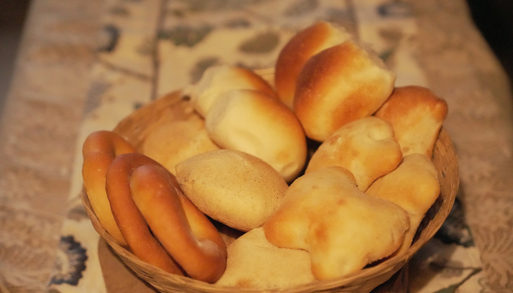
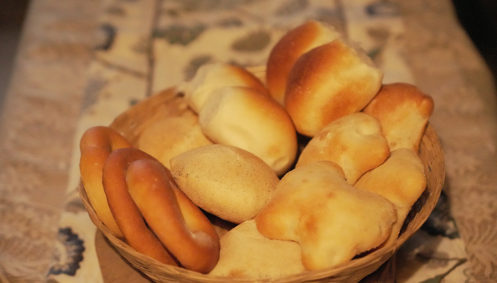
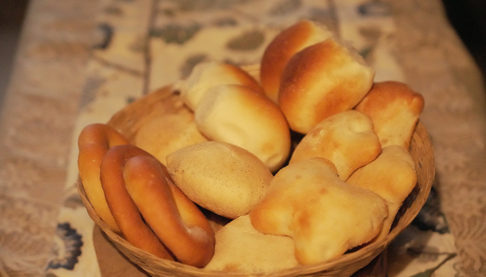

Fish Curry Chicken Xacuti Pao
Traditional Goan dishes reflect a rich blend of Indian and Portuguese influences. Popular dishes include Fish Curry Rice, a staple made with coconut and spices, and Prawn Balchão, a spicy pickled curry. Xacuti features complex flavors with roasted spices and coconut. Sorpotel and Vindaloo are spicy pork dishes with vinegar and garlic. Bebinca, a layered dessert, is a festive favorite in every Goan household

Fish Curry Chicken Xacuti Pao